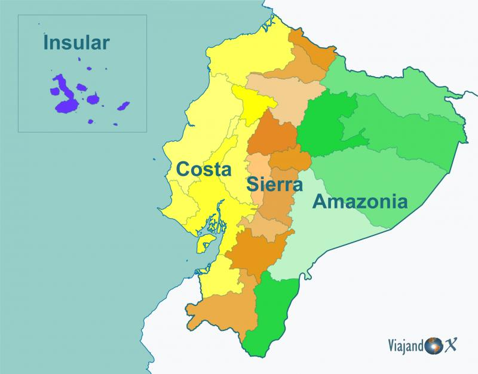
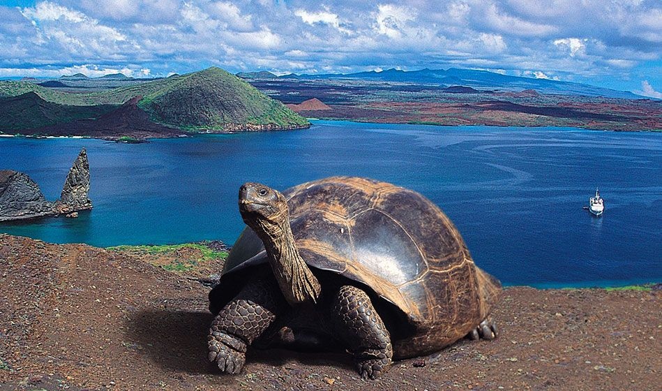
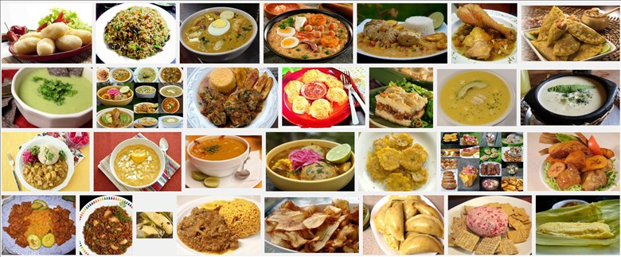

Explora la diversidad y cultura de este maravilloso país.
Ecuador es un país con una rica historia que incluye civilizaciones precolombinas, el imperio Inca y la colonización española. Se independizó en 1820 y forma parte de la Gran Colombia antes de establecerse como república en 1830.
Ecuador ofrece una gran variedad de destinos turísticos, desde las Islas Galápagos hasta la selva amazónica, la cordillera de los Andes y las playas de la costa del Pacífico.
La cocina ecuatoriana es muy diversa e incluye platos como el ceviche, el locro de papas, la fanesca y la fritada.
A continuación has clic sobre cualquier imajen y descubre mas sobre Ecuador.